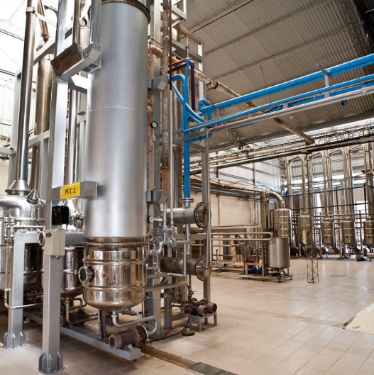

Bodegas y Viñedos Benedetti es una empresa familiar fundada en 1948 por Próspero Antonio Benedetti, descendiente de inmigrantes italianos. Actualmente se encuentra en manos de la segunda y tercera generación de la familia, que ha dado continuidad a la actividad iniciada hace más de siete décadas y ha incorporado nuevas tecnologías y líneas de producción.
Si bien sus orígenes están ligados a la elaboración y comercialización de vinos, a partir de la década de 1990 la empresa sumó la producción de jugo concentrado de uva, con inversiones tecnológicas de vanguardia y de gran calidad.
En la actualidad alcanza una molienda aproximada de 20 millones de kg entre uvas, entre variedades criollas, Pedro Giménez, Bonarda, Tempranillo, Cabernet Sauvignon, Ugni Blanc y Sauvignon Blanc.
Una de las particularidades del establecimiento es la diversificación de su producción. Alrededor del 30 % se destina a la elaboración de vinos para el mercado local, mientras que el resto se utiliza para producir mosto virgen que luego se concentra, se pasteuriza, se envasa y se exporta. Entre sus destinos se encuentran países diversos como Perú, Colombia, Canadá, Sudáfrica, Tailandia y China, además de otros mercados internacionales. En 2025 fue distinguida por el Honorable Concejo Deliberante de Junín por su trayectoria y aporte a la actividad productiva local. Por otro lado, en el año 2021 recibieron el Premio de Mujeres Emprendedoras otorgado por el Banco de la Nación Argentina.
Aunque actualmente la bodega no recibe visitas turísticas, sus responsables tienen interés en incorporar esta actividad en el futuro. Su extensa trayectoria, la continuidad familiar y la combinación entre producción vitivinícola tradicional, innovación tecnológica y exportación la convierten en un buen ejemplo de las transformaciones experimentadas por el paisaje productivo de Los Barriales.

Instagram: @bodegabenedetti